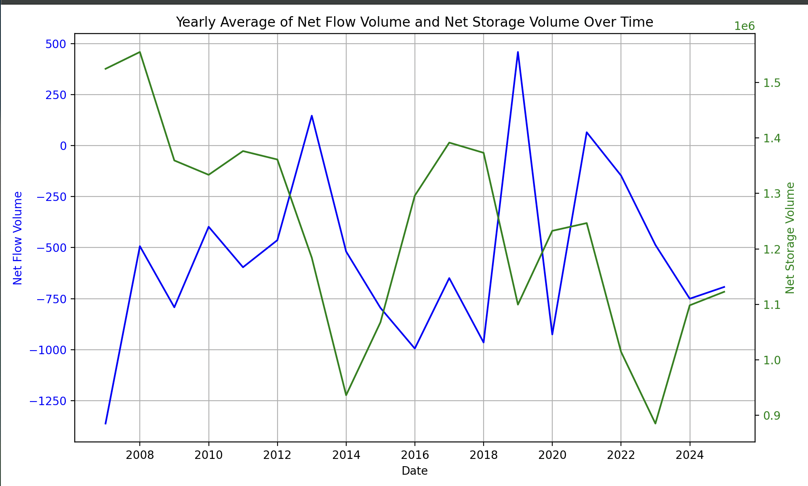
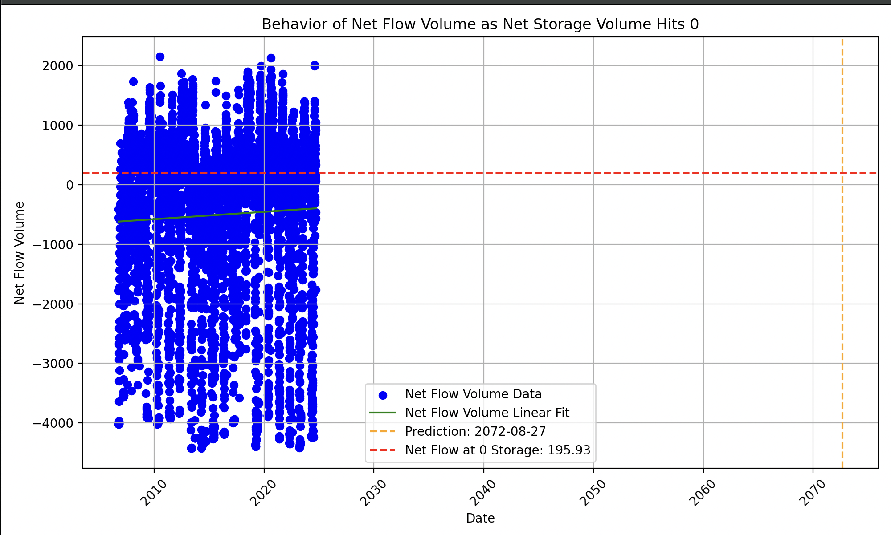
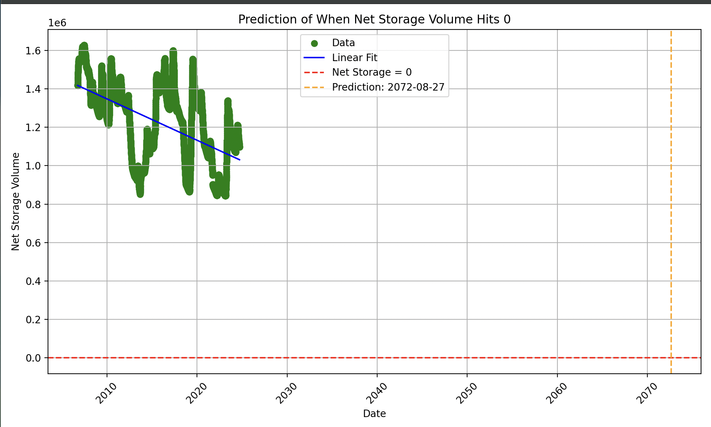

DesertFlow
Predictive Water Models for Navajo Nation
Predictive Water Models for Navajo Nation
Introduction
Water scarcity is a significant issue in the Navajo Nation, a region spanning Arizona, Utah, and New Mexico. Many Navajo residents lack access to clean, running water due to a combination of geographic isolation, underdeveloped infrastructure, and historical neglect. More than 30% of the population lives without piped water, often relying on water hauling from distant sources. Droughts, contamination from mining, and depletion of groundwater have worsened the problem. Efforts are being made to address these challenges through infrastructure development, federal funding, and tribal initiatives, but the issue remains critical for the health and well-being of the community.
Meet the team
Archie


Joseph
Kowan
Raj
Data Pipeline
The data we used for our model is sourced from the USBR Government website which provided us with historical water data from 2006-2024. Key parameters we viewed were inflow, outflow, evaporation, and storage. Due to missing values, duplicates and incosistent entries the data needed to be cleaned and preprocessed. After that we looked for trends amongst the parameters that were generated by the model.
This graph illustrates the relationship between the net flow volume and net storage volume of the Navajo Reservoir over time. The net flow volume represents the gross amount of water entering and exiting the reservoir, while the net storage volume reflects the total water stored at the end of that particular date. By analyzing these trends together, we can better understand the reservoir's water dynamics and project the point at which the storage might reach critically low levels.
Graph 1: Reservoir Water Dynamics Over Time: Net Flow Volume vs. Net Storage Volume
Graph 2: Projected Behavior of Net Flow Volume at Zero Storage
This graph shows the behavior of the net flow volume as the reservoir's net storage volume approaches zero. It highlights the reservoir's water inflow and outflow patterns during critical low storage levels. Understanding this relationship is crucial for predicting the reservoir's response to dwindling storage, aiding in water resource management decisions during crisis periods.
This graph presents the projected timeline for when the reservoir's net storage volume is expected to reach zero, based on current inflow, outflow, and evaporation trends. It leverages a linear regression model to predict the depletion date, providing crucial insights into the timeframe of water exhaustion. This forecast is vital for strategic planning and implementing water conservation measures.
Graph 3: Forecast of Zero Net Storage Volume
Visualisation of ground water wells in the Navajo Region
Libraries and Datasets used for this project
Pandas
HTML and CSS
D3.JS for Data Visualisation
Matplot library
seaborn
Numpy
Datasets Used: